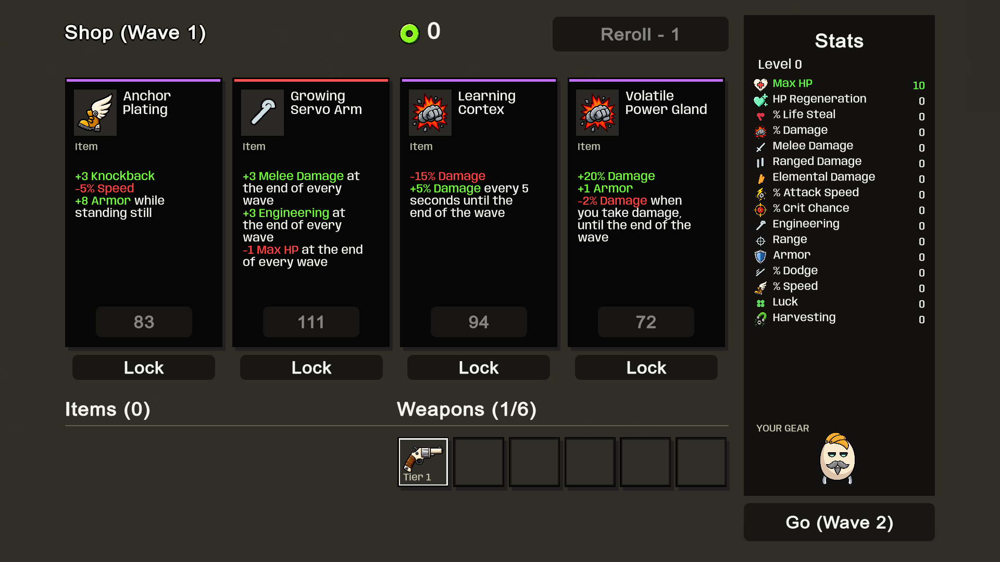
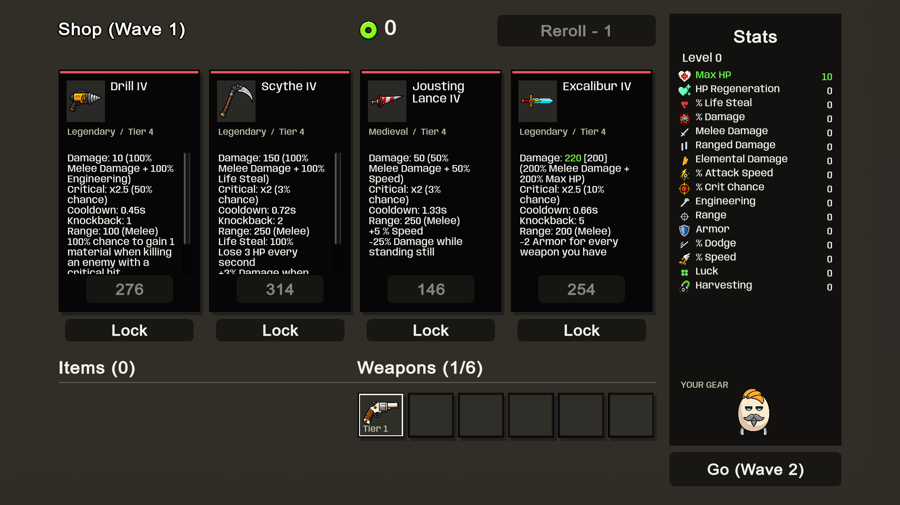

Our cream mascot and artwork, with gameplay values extracted from the supplied Brotato base resources. 13 more implants and four weapon behaviors. 119 item definitions / 98 obtainable; 43 obtainable weapon families.
| Reference rule | Unity implementation |
|---|---|
| Drill | +10% attack speed every 5 seconds; clears after the wave. |
| Scythe | Lose 3 HP per second; +3% damage per damage event for the wave. |
| Jousting Lance | Tier-specific speed bonus and standing damage penalty. |
| Excalibur | -2 Armor per equipped weapon, including itself; source-locked. |
| Unique weapons | Different tiers of one family count as one type. |
Validation: 199 tests passed; 41 fresh UI captures; all 148 obtainable weapon tiers dealt damage; automated 20-wave campaign Won with 47 purchases. AssetScope: 311 assets, no findings.

Values remain separate from their trigger descriptions. Long cards scroll. Existing stat glyphs are used for implants without bespoke artwork.

Staged review includes locked Excalibur to inspect its description. It is not added to the fresh-profile shop pool.
These are captured Windows-player fixtures, not mockups or a human playthrough. Source comparison and limitations: engineering notes. 90 items, six explicitly gated weapon families and the locked Rail Gun special remain unfinished.